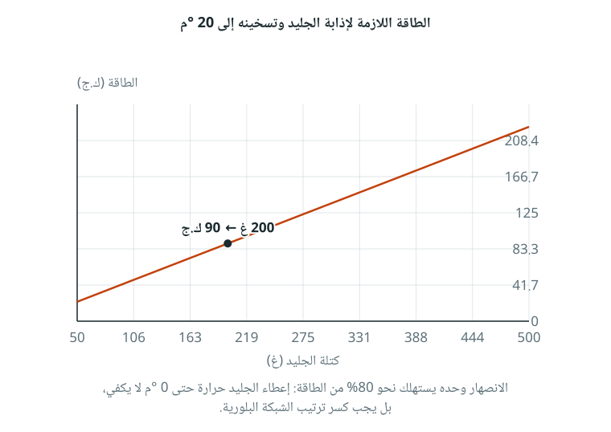

كم طاقة تحتاج لإذابة كأس جليد؟
غيّر كتلة الجليد وشاهد الطاقة اللازمة. محاكاة تعليمية لا قياس فيزيائي حقيقي.
محاكاة تعليمية لا قياس فيزيائي حقيقي: الأرقام تُحسب من النموذج لحظيًا، ولا تُقاس بأدوات منزلية.
افتراضات النموذج والمصدر
Q = m·(c_ice·15 + L_f + c_w·20)
جليد نقي عند -15 °م
لا فقد حراري للجو
قدرة تسخين ثابتة 2.1 ك.و
ضع مكعبات جليد في كأس على موقد صغير وسجّل الزمن حتى تذوب تمامًا، ثم حتى تصل الحرارة 20 °م. ستجد أن معظم الزمن ذهب في الإذابة لا في التسخين: الحرارة تُصرف على تفكيك الشبكة البلورية لا على رفع الترمومتر.
الحساب على ثلاث مراحل: تسخين الجليد من -15 إلى 0 °م، ثم صهره عند 0 °م بحرارة كامنة 334 kJ/kg، ثم تسخين الماء الناتج إلى 20 °م. لمئتي غرام: 6 ك.ج + 67 ك.ج + 17 ك.ج = 90 ك.ج تقريبًا.
ما لا يُقاس منزليًا: الحرارة الكامنة نفسها. القياس يحتاج مسعرًا وكفة معزولة وقياس كتلة دقيقة — والتجربة المنزلية تعطي الإحساس بالتوقيت لا الرقم.
كيف تعمل الظاهرة؟
في الجليد ترتبط الجزيئات بروابط هيدروجينية في شبكة صلبة. رفع الحرارة يزيد الاهتزاز حتى تنكسر الروابط، فتصبح الجزيئات قادرة على الانزلاق — وهذا الكسر يستهلك طاقة بلا تغيّر في الترمومتر.
العلاقة بالأرقام
المعادلة: Q = m·(c_ice·15 + L_f + c_w·20). عند كتلة الجليد 200.00 غ، يعطي الحساب: الطاقة الكلية = 89.7 ك.ج؛ نصيب الانصهار = 66.8 ك.ج؛ الزمن على 2.1 ك.و = 0.7 دقيقة. حالة «كتلة أصغر» (كتلة الجليد 100.00 غ): الطاقة الكلية = 44.8 ك.ج؛ نصيب الانصهار = 33.4 ك.ج؛ الزمن على 2.1 ك.و = 0.4 دقيقة. حالة «كتلة مضاعفة» (كتلة الجليد 200.00 غ): الطاقة الكلية = 89.7 ك.ج؛ نصيب الانصهار = 66.8 ك.ج؛ الزمن على 2.1 ك.و = 0.7 دقيقة. هذه أمثلة مولدة من دالة الحساب نفسها؛ وليست قياسات فعلية أو مواصفات لجهاز تجاري.
مفاهيم متقاربة
يُخلط بين «الحرارة المحسوسة» و«الحرارة الكامنة»: الأولى ترفع الترمومتر، والثانية تُغيّر الحالة بلا ارتفاع في الحرارة — لذلك يبقى الخليط عند 0 °م حتى يذوب آخر مكعب.
حدود التطبيق
النموذج يفترض جليدًا نقيًا بلا شوائب وفقدًا حراريًا صفريًا للهواء. في الواقع يُفقد جزء من الحرارة للجو، فتحتاج طاقة أكبر — ولذلك يتأخر الذوبان أكثر في وعاء مكشوف.

| الكمية | القيمة | المصدر |
|---|---|---|
| الطاقة الكلية — الحالة الافتراضية | 89.7 ك.ج | [1] |
| نصيب الانصهار — الحالة الافتراضية | 66.8 ك.ج | [1] |
| الزمن على 2.1 ك.و — الحالة الافتراضية | 0.7 دقيقة | [1] |
المصادر
- 1 Latent heat of fusion of water and ice — Wikipedia. en.wikipedia.org/wiki/Latent_heat · اطُّلع عليه 2026-11-19
- 2 Ice — thermal properties — The Engineering ToolBox. www.engineeringtoolbox.com/ice-thermal-properties-d_576.html · اطُّلع عليه 2026-11-19
راجعه: عبدالله الهويدي — مراجعة في تطبيق انفراد · 2026-11-19 · آخر تحديث 2026-11-20
رجوع إلى المعمل